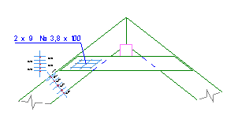
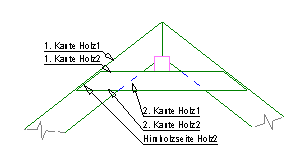
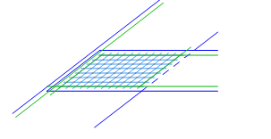
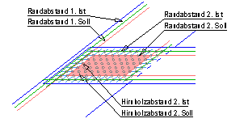
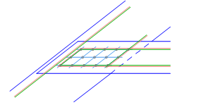
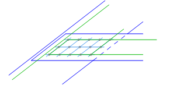
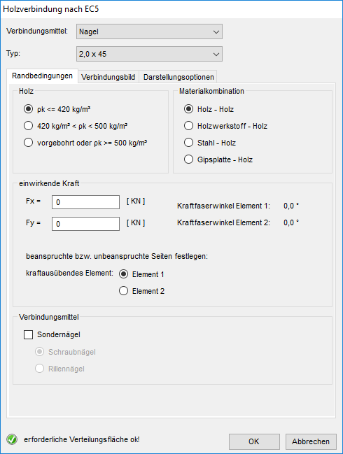

")
")
Alternativer Aufruf: mittlere Maustaste auf ein Holzbauelement.
Erstellen Sie für Holzanschlüsse rautenförmige Anschlussbilder. Die gegenüberliegenden Kanten müssen parallel verlaufen. Für jedes Holz kann zusätzlich eine Hirnholzseite angegeben werden.
|
Tipps: |
|
·Zu den Darstellungen gehören Eigenschaften, die Sie im Dialog Holzverbindung nach EC5 festlegen können (s. unten). ·Sie können Verbindungsbilder mit [Konst 1 | Kopier → KoFest] vervielfältigen. |

|
So wird's gemacht:
§Klicken Sie die Ober- und Unterkante des ersten Holzes an. [1. Kante Holz1]; [2. Kante Holz1].
§Klicken Sie die Hirnholzseite des ersten Holzes an. [Hirnholzseite Holz1].
Wenn es keinen direkten Bezug auf das Hirnholz gibt, können Sie die Angabe der Hirnholzseite mit Rechtsklick überspringen.
§Klicken Sie nacheinander die Kanten des zweiten Holzes an. [1. Kante Holz2; 2. Kante Holz2; Hirnholzseite Holz2].
Der Dialog Holzverbindung nach EC5 wird geöffnet. Im Dialog können Sie die Randbedingungen und die Abstände eingeben. Zur genaueren Angabe der Abstände kann der Winkel zwischen Kraft- und Faserrichtung herangezogen werden. Ohne Kraftangabe werden die Werte für sinα und cosα mit 1,0 angesetzt, sodass die Abstände der Verbindungsmittel nicht reduziert werden.
|
Hinweise: |
|
·Die Eingabe der Kräfte hat keine Auswirkung auf die Anzahl der Verbindungsmittel und deren Abmessungen! Sie dient nur der Ermittlung des Winkels der Kraftresultierenden. ·Falls ISBCAD keine Raute erzeugen konnte (Meldung), müssen Sie zurück zum Beginn der Abfrage () und die Reihenfolge der angeklickten Linien ändern. |

§Geben Sie im Dialog Holzverbindung nach EC5 das Verbindungsmittel und den Durchmesser an.
§Rufen Sie die Registerkarte Verbindungsbild auf und klicken Sie auf .
Das Verbindungsbild wird unter Berücksichtigung der Mindestabstände auf die maximal mögliche Anzahl an Verbindungsmitteln angepasst.
§Klicken Sie auf OK, um den Dialog zu schließen.
§Setzen Sie die Beschriftung des Verbindungsbildes per Mausklick in der Zeichnung ab. [Lage].
Das Verbindungsbild wird fertiggestellt, die Zeigerlinie wird automatisch erzeugt. Sie können sofort ein weiteres Verbindungsbild erstellen.
Empfohlene Vorgehensweise:
1.Klicken Sie die Kanten an.
2.Wählen Sie die Rohdichte des Holzes.
3.Wählen Sie das gewünschte Verbindungsmittel aus und suchen Sie den richtigen Typ aus.
4.Klicken Sie auf an Grenzwerte anpassen.
5.Geben Sie die nötigen Anzahlen der Nägel ein.
6.Geben Sie für die Abstände „runde“ Werte ein.
7.Durch die Eingabe der Kräfte werden die Abstände weiter angepasst.
8.Bestätigen Sie die Eingaben mit OK.
 |
 |
Dieses Verbindungsbild soll erstellt werden. |
Klicken Sie die Kanten wie gezeigt an. |
 |
 |
Es werden die kleinsten Nageldurchmesser vorgeschlagen. Die Randabstände und Abstände untereinander sind korrekt. |
Wenn Sie einen stärkeren Nageltyp auswählen, verlagern sich die Sollabstände nach innen. Wenn die Abstände unterschritten werden, werden sie rot geschrieben. |
|
 |
Wenn Sie auf an Grenzwerte anpassen klicken, passt sich das Verbindungsbild automatisch allen Mindestwerten an und reduziert die Anzahl der Nägel auf das Maximum. |
Die automatisch ermittelten Maße (z. B. 26,6mm) können manuell (z. B. auf 30mm) erhöht werden. |
 |
|
Geben Sie die erforderliche Nagelanzahl in Element 1 und 2 an. Platzieren Sie den Text an geeigneter Stelle. |
Das rechte Anschlussbild wurde kopiert. [Konst 1 | Kopier → KoFest]. |


Optionen im Dialog "Holzverbindung nach EC5"
 |
Verbindungsmittel
Auswahl des Verbindungsmittels.
Typ
Auswahl des Verbindungsmittel-Typs (abhängig vom gewählten Verbindungsmittel).
Registerkarte Randbedingungen
Angabe der Randbedingungen (abhängig vom gewählten Verbindungsmittel).
Holz
Nur wenn als Verbindungsmittel Nägel oder Schrauben gewählt wurden.
ρκ ≤ 420 kg/m³ Die Rohdichte rk des Holzes ist kleiner als 420 kg/m³. Nägel sind nicht vorgebohrt. 420 kg/m³ < ρκ< 500kg/m³ Die Rohdichte des Holzes ist > 420 kg/m³. Nägel sind nicht vorgebohrt. Vorgebohrt oder ρκ ≥ 500kg/m³ Bei Nägeln und Schrauben haben die Rohdichte und ggf. das Vorbohren Auswirkungen auf die Abstände. |
Materialkombination
Nur wenn als Verbindungsmittel Nägel oder Schrauben gewählt wurden.
|
Einwirkende Kraft
Die Eingabe der einwirkenden Kräfte dient nur der Ermittlung des Winkels der Kraftresultierenden.
Die Angaben haben keine Auswirkung auf die statisch erforderliche Anzahl der Verbindungsmittel und deren Abmessungen!
Fx = Optional können Sie Kräfte in kN eingeben. Positiv nach rechts und nach unten. Die Eingabe der Kräfte dient nur der Bestimmung der Kraft-Faserrichtung! Kraftübertragendes Element Diese Eingabe ist für die Bestimmung des beanspruchten Randes erforderlich.
|
Verbindungsmittel
Nur wenn als Verbindungsmittel Nägel gewählt wurden: Auswahl von Sondernägeln (optional).
Sondernägel
|


Registerkarte Verbindungsbild
1. Element; 2. Element
Angaben zum Verbindungsbild für das 1. Element und für das 2. Element.
Randabstand 1; Randabstand 2 Angabe des kleinsten Abstandes zwischen Verbindungsmittel und Holzkante. Nach Anklicken eines Eingabefeldes wird die entsprechende Holzkante in der Zeichnung markiert. Hirnholzabstand Angabe des kleinsten Abstandes zwischen Verbindungsmittel und Hirnholzseite. längs zur Faser a1; quer zur Faser a2 Berechneter Abstand zwischen den Verbindungsmittel sowie der Mindestabstand (>=). Kraftfaserwinkel Wenn Sie Kräfte eingegeben haben, wird hier der resultierende Winkel bezogen auf das Holz angeschrieben. |
Verbindungsmittel in Faserrichtung Element 1/Element 2
Angabe der gewünschten Anzahl von Verbindungsmitteln.
Wenn der Mindestabstand durch zu viele Verbindungsmittel unterschritten wird, wird die maximale Anzahl und der Mindestabstand in Rot angeschrieben.
Hier können Sie ggf. durch Angabe der Kräfte die mögliche Anzahl erhöhen.
Gesamtanzahl
Das Produkt der Verbindungsmittel in Faserrichtung der Elemente 1 und 2 wird als Gesamtzahl angeschrieben.
Doppelte Anzahl
Nur wenn als Verbindungsmittel Nägel, Schrauben oder Klammern gewählt wurden.
Die Verbindungsmittel werden immer für die einseitige Verbindung berechnet. Sollen die Elemente beidseitig verbunden werden, kann dies in der Beschriftung des Nagelbildes durch die Angabe 2 x kenntlich gemacht werden.
|
Standardeinstellung für einseitige Verbindung. |
|
Setzt die Angabe 2 x vor die Beschriftung des Nagelbildes. |
vorhandener Randabstand
Farbe für den gewählten Randabstand.
erforderlicher Randabstand
Farbe für den erforderlichen Randabstand.
Passt das Verbindungsbild unter Berücksichtigung der Mindestabstände auf die maximale mögliche Anzahl an Verbindungsmitteln an.
Klammerwinkel
Wird nur angezeigt, wenn als Verbindungsmittel Klammer gewählt wird.
Element 1 / 2
Der jeweilige Winkel zwischen der Faserrichtung und der Klammer wird angezeigt. Sie können einen der beiden Werte verändern. Der andere Wert wird automatisch angepasst.
Registerkarte Darstellungsoptionen
Verteilung
normal |
Die Verbindungsmittel werden auf den Schnittpunkt der Rasterlinien gesetzt. |
versetzt |
Die Verbindungsmittel werden abwechselnd rechts/links und oben/unten neben die Rasterlinie versetzt angeordnet |
Beschriftung
Angabe eines beliebigen Ergänzungstextes, der hinter die Angaben für die Verbindungsmittel gesetzt wird.
Die Beschriftung mit Ergänzungstext wird als Vorschau angezeigt.
Darstellung
Darstellungsoptionen für die Verbindungsmittel-Symbole.
(Diese Auswahl steht nur bei bestimmten Verbindungsmitteln zur Verfügung.)
gefüllt |
Das Symbole für das Verbindungsmittel wird gefüllt dargestellt. |
||
nicht gefüllt |
Die Symbole werden nicht ausgefüllt. |
||
wechselseitig |
Abwechselnd werden die Kreise gefüllt und nicht gefüllt dargestellt.
|
Zugehörige Referenzen: